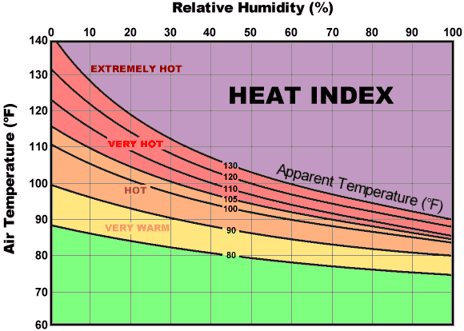

Objectives
Welcome
Welcome to your first Daily Digital assignment. There will be a Daily Digital for each class day. They will generally consist of exercises from the MMAC textbook translated into online format, exercises that we have written specifically for the course, and exercises about use of the computer. (“MMAC” refers to Kilty and McAllister, Mathematical Modeling and Applied Calculus.)
To start, we want to show you how you will hand in your completed work. Your work in the Daily Digital will consist of multiple-choice questions, the construction of computer commands to carry out calculus, and occasionally short essays. Each these will appear in a specially formatted block such as the one that follows. Answer the question and press the blue “Submit” button.
As you can see, many of the exercises in the Daily Digital will give you immediate feedback. And for many, if you have the wrong answer initially you’ll have a chance to revise.
As you work through the Daily Digital, your answers–right or wrong–will be remembered by your browser. It is much the same as if you were writing your answers on paper. Like paper assignments, your instructor doesn’t know about your work until you hand it in.
Near the top of each page is a gray box with an encrypted string. This contains the record of your work in the current session. At the very start of each session, the string will be short. Each time you submit your work, the string will update (with a few seconds delay).
You hand in your Daily Digital work with a two-part process.
- Use your cursor to copy the encrypted string.
- Click on the “Link to submit your work.” This will open up a form where you can paste the encrypted string. There may be other information you need to give, such as your user name. Or you may be asked to log in to the course-support software system.
Once you’ve completed and handed in that form in the appropriate manner, your Daily Digital work (up to the moment you copied the encrypted string) has been handed in.
Be careful not to alter the encrypted string in any way whatsoever when you cut and paste it into the form. Altering or omitting even one character will make it impossible for the instructor to see your work.
If something goes wrong with the the form (for instance if the course support system is off-line), you can save the encrypted string in a document on your own computer, then come back at another time and copy the string from your document to the appropriate form.
DO NOT leave your document unattended for more than a few minutes. Each time you open a Daily Digital a lot is happening behind the scenes. One of those things involves setting up a virtual machine in the cloud specifically for you. the virtually machine will be closed down after a few minutes of inactivity. Answering a question or changing pages will keep the virtual machine in place. Closing your browser tab will terminate the virtual machine immediately, so never do that until you’ve submitted the encrypted string or saved it on your own computer for later submission to the form.
If you are nervous about the virtual machine closing down, you can go through the submission process whenever you like, then come back to your work and, when you finish, go through the submission process again. As you gain experience, you will also gain confidence in the system. But if things go wrong, you will need to open the Daily Digital again and re-enter every answer since you last completed the submission process for that document.
Set your authentication code
We are using two factors for identification and authentication of your Daily Digital submissions. The first is your Academy email address, which you will enter on the form to which you copy your encrypted string.
The second is an authentication code that you select yourself. Follow this link to set your authentication code. Note that it is not an ordinary password, just three everyday words that you choose separated by dashes, for instance, dog-eat-chair. Do not share this authentication code with anyone else, but note that it will be visible to your instructors.
Now let’s do some calculus!
Tables are functions
Many printed tables are meant to be used as functions; you plug in the input values and read off the output. Here’s a table published by the National Oceanic and Atmospheric Administration for the heat index, a way of summarizing the perceived comfort (or discomfort) of summer-like weather conditions.

The table actually shows three different functions:
- The heat index in \(^\circ\) F.
- The heat index in \(^\circ\) C.
- A caution warning level.
The US National Weather Service also publishes a heat index graphic, the one below.

{kind=link}
From the textbook …
In most Daily Digitals, there will be exercises selected from the textbook. Some of these will be set up for you to submit answers in the same way you have for other Daily Digital problems. When this is the case, you do not need to retain any paper you have used in forming your answer.
Sometimes, you will be explicitly instructed to hand-in your textbook exercise work on paper in the traditional way. You will be given instructions for how to submit this work via another mechanism.
MMAC Exercise 17
MMAX §1.1 16-17
In Exercises 16 and 17, explain why the table of data does or does not define a function. Also, if it is a function, state the domain and range.
Exercise 16
Average debt (D) in thousands of dollars at the end of the spring term in each year (Y) for bachelor’s degree recipients attending public four-year colleges and universities who borrowed money to finance their education.
| Y | D |
|---|---|
| 2001 | 20.4 |
| 2003 | 20.9 |
| 2005 | 21.5 |
| 2006 | 21.8 |
Exercise 17
Price of gas (P) at different gas stations in Los Angeles, California on June 11-12, 2015 (D)
| D | P |
|---|---|
| 6/11 | 3.79 |
| 6/11 | 3.50 |
| 6/12 | 3.79 |
| 6/12 | 3.49 |
MMAX §1.1 21-27
On a piece of paper, sketch out the functions corresponding to exercise 21-26. (A rough approximation will do, so long as it captures the salient features of the function for answering the question. You don’t need to draw in tick marks or tick labels, but do label the horizontal axis “input” and the vertical axis “output.”)
Explain why the curve drawn does or does not define a function. [You can do this by annotating your sketch, circling and labeling, for instance, problem areas that make the curve not a function.] Also, if it is a function, state the apparent domain and range.
Hand in your work
Location: CalcZ/_DailyDigitals/DailyDocuments/inst/141Z-Daily-digitals/DD-141Z-01/DD-141Z-01.Rmd 141Z-DD01